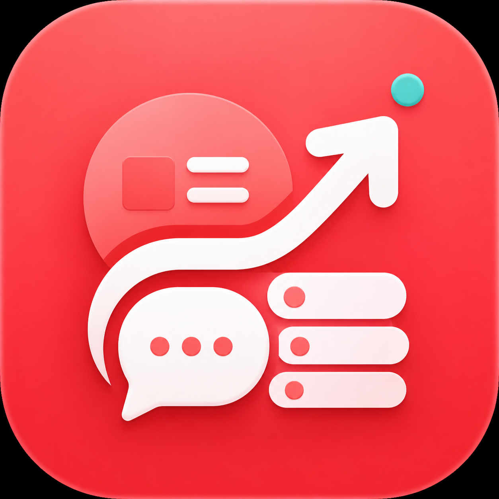

互动队列
按关键词搜索帖子，先进入队列筛选，再生成评论草稿和执行发布。

Kato小红书运营 · 本地优先 · 人工确认
Kato 提供本地 dashboard、容器内 Chromium、CDP 实时连接、稳定 REST API 和可选 MCP 兼容层。自动化负责排队和准备，人负责最后确认。
docker compose up -d --build
open http://localhost:4173
# CDP 只绑定本机
http://127.0.0.1:9222/json快速开始
容器会在 4173 启动 Kato Console，在 18060 启动 XHS browser service。浏览器运行在容器里， CDP 只映射到本机，适合扫码、二次验证和人工接管。
git clone git@github.com:LiuTianjie/kato.git
cd kato
cp .env.example .env
docker compose up -d --build按关键词搜索帖子，先进入队列筛选，再生成评论草稿和执行发布。
登录、扫码、验证都在同一个容器浏览器里完成，自动化复用同一份登录态。
维护自己的小红书笔记，评论草稿会围绕你的真实内容和账号定位生成。
标准接口
公共业务接口统一挂在 /api/v1/xhs/*。请求使用
XHS_API_TOKEN 鉴权，响应统一为成功或错误 envelope。
curl -X POST http://localhost:4173/api/v1/xhs/posts/search \
-H "Content-Type: application/json" \
-H "X-API-Key: $XHS_API_TOKEN" \
-d '{"keywords":["AI工具"],"limit":10}'